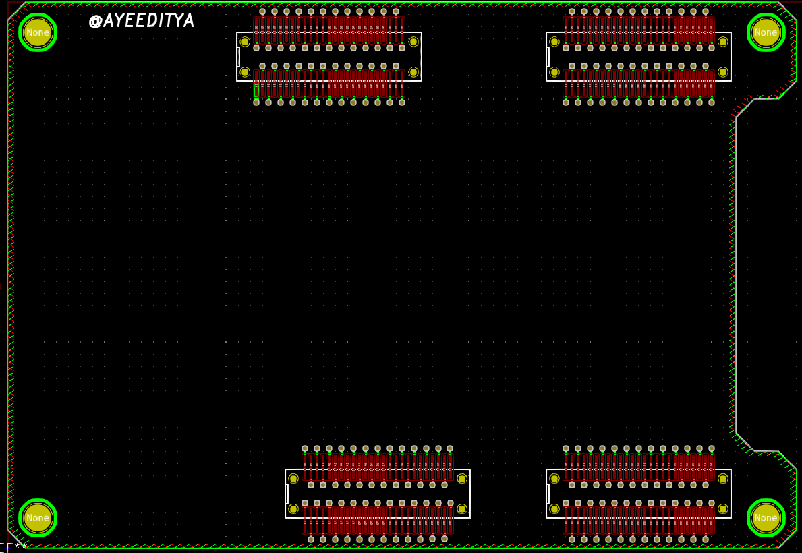

This project template is the basis of a base template board for the
Alchitry AU
This base project includes a PCB edge defined as the same
size as the Alchitry AU PCB with the connectors placed
correctly to align the multiple elements.
Contours and holes can be easely modified, just remove line or hole
and redraw wath you want in layer "edge.cuts".
The final PCB looks like the following:

2020 Aditya Sehgal.